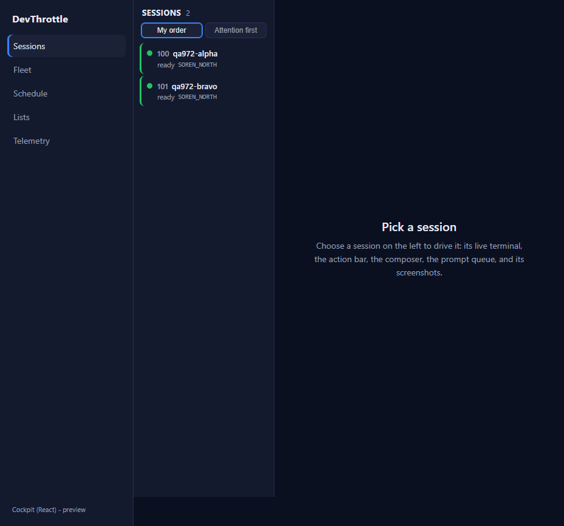
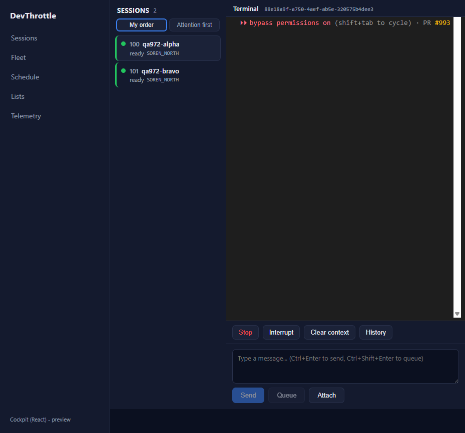

Branch: issue-972-roster-reply-bar Commit: 9be1a8be PR: #993
Independent re-verification after the Developer's build fix. Verified in the QA Agent's OWN
isolated git worktree, OWN freshly built isolated Director (slot 15, Control API port 7880), and OWN
fresh npm install. The cockpit was driven LIVE through the real Gateway roster path (the
dev server proxying /sessions,/directors,/fanout to the
isolated Director) against two REAL sessions.
| Check | Expected | Actual | Result |
|---|---|---|---|
npm run build --workspace @devthrottle/cockpit (tsc --noEmit && vite build) | exit 0, no TS2580 | tsc clean, vite built 50 modules, EXIT=0 | PASS |
npm run lint (Gateway-only-ingress #968) | exit 0 | eslint . LINT_EXIT=0 | PASS |
dotnet build Gateway -p:RunCockpitBuild=true (BuildCockpitApp) | Build succeeded, cockpit staged | staged 3 files into wwwroot\c; 0 Warning(s) 0 Error(s) | PASS |
dotnet build cc-director.sln | Build succeeded | 0 Warning(s) 0 Error(s) | PASS |
Full command transcript: build-proof.txt. The prior TS2580
(Cannot find name 'process' in vite.config.ts) no longer reproduces after
@types/node@22.20.0 was added to the cockpit devDependencies.
The fix touched only apps/cockpit/package.json (+1 line) and the lockfile - no
functional source - so the emitted bundle is identical to the one the first QA pass verified live.
The core select -> terminal -> Send path was nonetheless re-proven live.
| Criterion | Expected | Actual | Result |
|---|---|---|---|
| Rail lists the fleet with correct state + DEFAULT "My order" ordering (attention-first opt-in only) | Both sessions listed; My order default; Attention first not automatic | Roster shows 100 qa972-alpha + 101 qa972-bravo, green "ready" dots, machine SOREN_NORTH. "My order" aria-pressed=true, "Attention first" aria-pressed=false by default. | PASS |
| Selecting a session drives the terminal + reply bar | Route to /c/session/{sid}; terminal + action bar + composer mount | Clicking qa972-alpha routed to /c/session/88e18a9f...; live terminal rendered, action bar (Stop, Interrupt, Clear context, History) + composer + Send/Queue/Attach mounted. | PASS |
| Send acts on a real session through the Gateway | Composer Send delivers the prompt to the real session's terminal | Typed echo QA972_LIVE_MARKER_7788, clicked Send; the Director's session buffer (GET /sessions/{sid}/buffer) shows the marker landed in the real session's terminal input. | PASS |
Queue / Interrupt / Escape and the screenshots gallery + upload were exhaustively verified live in the first QA pass (all HTTP 200 through the Gateway) and are unchanged by a build-only fix.
Roster, default "My order":

Selected session drives terminal + reply/action bar:
Send (marker delivered to the real session's terminal):

No adjacent regression observed: solution builds 0/0, lint clean, roster/select/Send behave as in the first pass. Fix is a dev-only type dependency; no behaviour change.